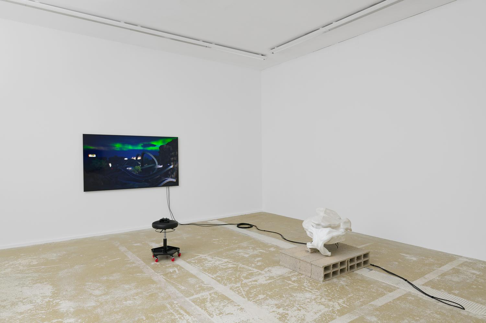

Blank Memory
François Bellabas / 2023 / curating
Developed in close collaboration with François Bellabas, Blank Memory is structured around two main themes: the reappropriation of a shared imagery of California, shaped and circulated by the creative industries; and the use of this territory as a metaphor for data circulation, the development of machines, and the hopes and anxieties these dynamics generate. The exhibition takes the form of a multimedia installation foregrounding key elements of the Californian landscape, treated as figures of these issues. François Bellabas's project also functions as an enquiry into the mutual influence of human and machine agencies, and into the ways they shape contemporary technical images.
Développée en étroite collaboration avec François Bellabas, Blank Memory s'articule autour de deux axes principaux : la réappropriation d'un imaginaire partagé de la Californie, façonné et diffusé par les industries créatives ; et l'usage de ce territoire comme métaphore de la circulation des données, du développement des machines, ainsi que des espoirs et des inquiétudes que ces dynamiques suscitent. L'exposition prend la forme d'une installation multimédia mettant en avant certains éléments clés du paysage californien, envisagés comme autant de figures de ces enjeux. Le projet de François Bellabas constitue également une enquête sur l'influence réciproque des agentivités humaines et machiniques, ainsi que sur les manières dont elles façonnent les images techniques contemporaines.
CPIF

-extrait
Fruit d'une recherche au long cours, Blank Memory convoque la machine comme objet et système de pensée, interrogeant une culture visuelle façonnée par la photographie, le cinéma et le jeu vidéo.
Depuis 2016, François Bellabas numérise la Californie, alimentant une vaste base de données recensant des milliers de fichiers : une accumulation témoignant aussi bien d'une profonde fascination que d'un sentiment d'inquiétude largement partagés. Parallèlement, il sonde cet ensemble d'images et y opère des prélèvements afin d'élaborer de nouvelles représentations. Suivant une logique d'activations successives, il explore les dynamiques d'interaction entre imaginaires collectifs et individuels, tout en construisant une réflexion sur l'image technique.
À l'occasion de son exposition au CPIF, le projet de François Bellabas prend la forme d'une installation faisant dialoguer photographies, pièces sculpturales et environnements numériques interactifs. Le centre d'art se transforme en un espace-temps singulier, à mi-chemin entre monde physique et virtuel, traversé par un flux visuel en développement. Transporté·es dans cet univers fantasmé, les visiteur·euses font l'expérience active d'une pensée et d'un espace qui se construisent par la photographie, à la fois image et donnée.
L'expression blank memory, empruntée au domaine de l'informatique, fait référence à des volumes de mémoire disponibles. Définissant un potentiel de stockage et de traitement des données, le titre évoque la collaboration entre agentivités humaine et artificielle. La photographie, à l'aune de cet échange, est alors envisagée comme un objet computationnel en constante redéfinition, soulevant des interrogations sur ses modes de production et de consommation.